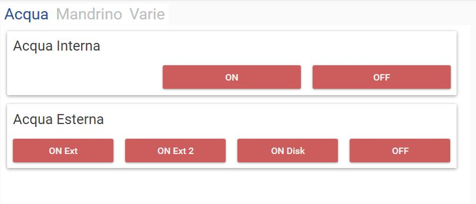
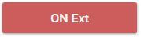
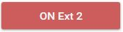
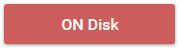
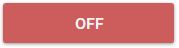

Machine technical documentation Operational document

Comandi dei flussi d’acqua
Nella scheda “Acqua” è possibile attivare/disattivare i vari flussi d’acqua.
 | ON |
 | OFF |
 | ON esterno |
 | ON esterno 2 |
 | On disco |
 | OFF |